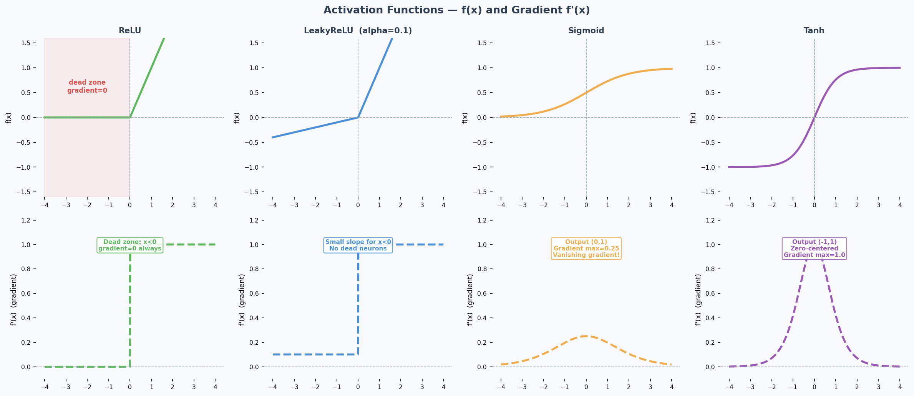
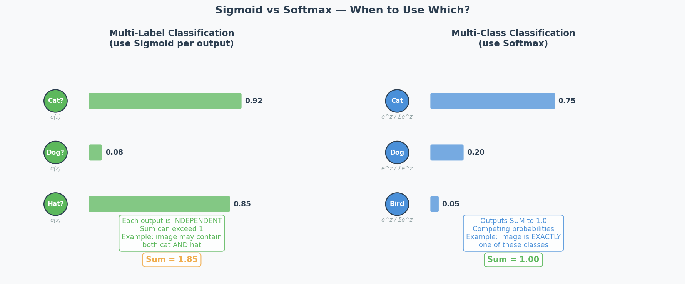
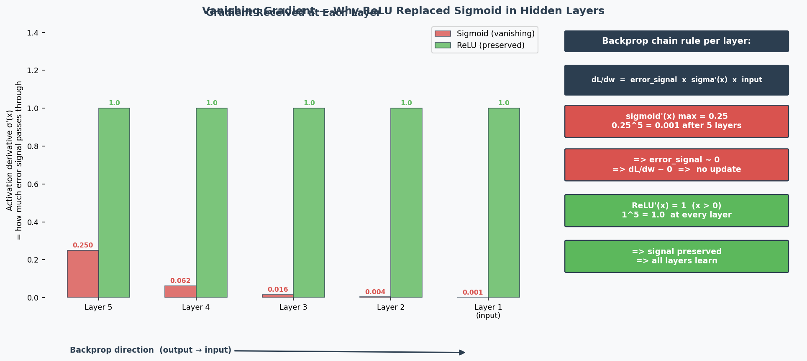
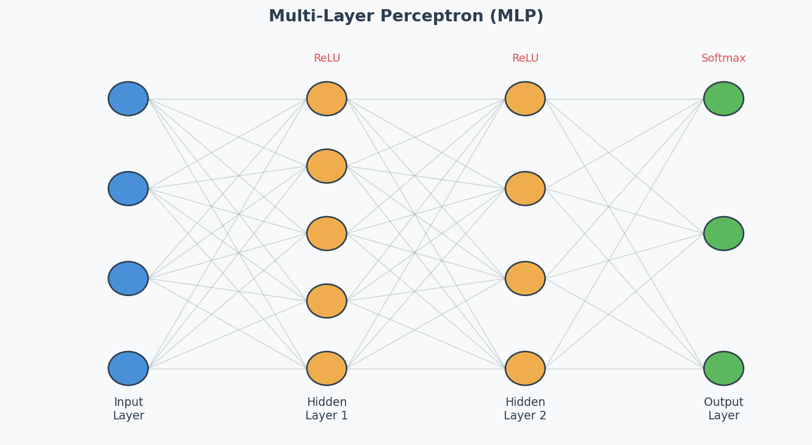

MLP, Activation Functions & DNN Training
Exam Importance
MED | 2025 Q3 (activation functions), 2024 Q7 (DNN training challenges)
Feynman Draft: Neural Networks
Imagine a team of workers in a factory assembly line. Each worker receives inputs, does a simple calculation (multiply by a weight, add a bias), and passes the result through a “decision gate” (activation function（激活函数）) to the next worker.
One worker can only draw a straight line to separate things. But stack many workers in layers, and they can draw incredibly complex boundaries — that’s a Deep Neural Network (DNN)（深度神经网络）.
Activation Functions (2025 Q3)

ReLU and the Dying ReLU Problem
ReLU (Rectified Linear Unit): $f(x) = \max(0, x)$
The problem: If a neuron’s input is always negative, ReLU outputs 0 and its gradient is also 0. The neuron stops learning permanently — this is the Dying ReLU Problem（神经元死亡问题）. Look at the gradient plot above: the flat zero region on the left is the dead zone.
LeakyReLU (The Fix)
$$\text{LeakyReLU}(x) = \begin{cases} x & \text{if } x > 0 \ \alpha x & \text{if } x \leq 0 \end{cases}$$
How it helps: The small slope $\alpha$ (typically 0.01–0.1) means the gradient is never zero — dead neurons can recover.
Output Activation（输出激活函数）: Sigmoid vs Softmax (2025 Q3b)

| Scenario | Activation | Why |
|---|---|---|
| Multi-class（多分类） (exactly 1 label) | Softmax | Outputs sum to 1 → probability distribution over classes |
| Multi-label（多标签） (multiple labels possible) | Sigmoid | Each output independently between 0 and 1 |
| Binary classification | Sigmoid (1 output) or Softmax (2 outputs) | Both work |
| Regression | Linear (none) | Unbounded continuous output |
2025 Q3b scenario: Manufacturing quality control — single image may contain multiple anomaly types simultaneously. This is multi-label → use sigmoid, because each anomaly is predicted independently.
Common Misconception: “Always use softmax for classification.” Only when it’s MULTI-CLASS (one label). For multi-label, softmax is wrong because it forces outputs to sum to 1 — detecting one anomaly would lower the probability of detecting others.
Why Deep Networks Are Hard to Train (2024 Q7)

The Problems:
-
Vanishing Gradients（梯度消失）: During backpropagation（反向传播）, gradients are multiplied through many layers via the chain rule. With sigmoid activation, the maximum derivative is only 0.25 — so gradients are multiplied by ≤0.25 at each layer. After 6 layers: $0.25^6 ≈ 0.0002$ — the gradient reaching early layers is nearly 0, so they can’t learn. ReLU fixes this because its derivative is exactly 1 for positive inputs, preserving gradient magnitude perfectly.
-
Exploding Gradients（梯度爆炸）: Same multiplication, but with values > 1 → gradient grows exponentially → training becomes unstable.
-
Overfitting（过拟合）: More parameters = more capacity to memorise training data noise.
-
Longer training time: More computations per forward/backward pass.
The Solutions (name 2 for the exam):
| Solution | How It Helps |
|---|---|
| Batch normalisation（批归一化） | Keeps activations in healthy range → gradients don’t vanish/explode |
| Skip connections（跳跃连接） (ResNet) | Gradient flows directly through shortcut → bypasses vanishing gradient problem |
| LSTM/GRU (for sequences) | Gating mechanisms control information flow → mitigate vanishing gradients |
| Better optimisers (Adam) | Adaptive learning rates per parameter → more stable training |
| Proper weight initialisation (He, Xavier) | Prevents activations from starting too large or small |
| Gradient clipping（梯度裁剪） | Caps gradient magnitude → prevents explosion |
Weight Initialisation（权重初始化）: Why Zero = Bad (Practice Q3)
If all weights are 0, then:
- All neurons compute the same output (0)
- All gradients are the same
- All weights update by the same amount
- All neurons remain identical forever → symmetry problem（对称性问题）
The network is essentially a single neuron repeated N times. It can’t learn different features.
Correct initialisation: Random values, properly scaled:
- Xavier/Glorot: For sigmoid/tanh: $\text{Var}(w) = 1/n_{in}$
- He: For ReLU: $\text{Var}(w) = 2/n_{in}$
Why two different methods? Each is designed to keep the variance of activations stable across layers for a specific activation function:
- Xavier assumes the activation is roughly linear around 0 (true for sigmoid/tanh near their centre). It balances forward and backward signal variance.
- He accounts for the fact that ReLU kills half the inputs (outputs 0 for negative), so it doubles the variance to compensate. Using Xavier with ReLU → activations shrink to 0 in deep networks. Using He with sigmoid → activations may saturate.
Rule of thumb: Match initialisation to activation — He for ReLU/LeakyReLU, Xavier for sigmoid/tanh.
Architecture Diagram

中文思维 → 英文输出
| 中文思路 | 考试英文表达 |
|---|---|
| ReLU的梯度在负数时是0，神经元就死了 | “When inputs are consistently negative, ReLU outputs zero with a zero gradient, causing the neuron to stop learning permanently — this is the dying ReLU problem.” |
| LeakyReLU给负数一个小斜率来修复 | “LeakyReLU introduces a small positive slope for negative inputs, ensuring the gradient is never zero and allowing dead neurons to recover.” |
| 多标签用sigmoid，多分类用softmax | “For multi-label classification, sigmoid is appropriate because each output is independent. Softmax is unsuitable as it forces outputs to sum to 1.” |
| 深度网络难训练因为梯度消失 | “Deep networks are difficult to train because gradients are multiplied through many layers via the chain rule, causing them to vanish exponentially.” |
| 权重全初始化为0有对称性问题 | “Zero initialisation creates a symmetry problem — all neurons compute identical outputs and receive identical gradients, making them unable to learn different features.” |
本章 Chinglish 纠正
| Chinglish (避免) | 正确表达 |
|---|---|
| “The neuron is dead” | “The neuron has become inactive due to the dying ReLU problem” |
| “Softmax is for classification” | “Softmax is for multi-class classification; sigmoid is for multi-label” |
| “Deep network is hard to train” | “Deep networks present training challenges, particularly vanishing gradients” |
Whiteboard Self-Test
- Can you explain the dying ReLU problem and how LeakyReLU fixes it?
- When do you use sigmoid vs softmax for the output layer?
- Can you name 2 reasons why deep networks are hard to train?
- Can you name 2 solutions that make deep training easier?
- Why is initialising weights to 0 a bad idea?